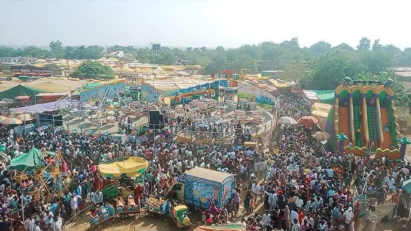
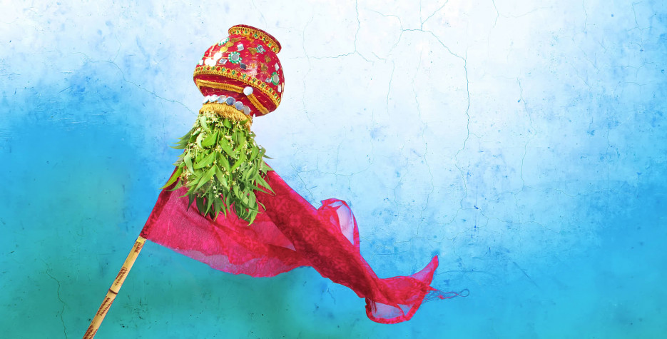
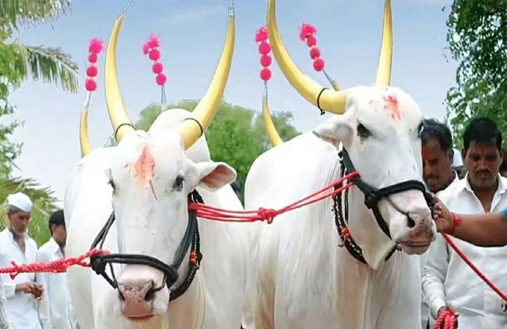

<
Famous Festivals in Nanded
1.Malegaon-Yatra

Malegaon Yatra is a prominent annual religious fair held in the village of Malegaon, located about 57 kilometers from Nanded in Maharashtra. The event is deeply rooted in the local traditions and is celebrated in honor of Lord Khandoba, a revered deity considered a manifestation of Lord Shiva. The yatra typically takes place in the Hindu month of Margashirsha, which usually falls between December and January according to the Gregorian calendar. This period is marked by pleasant winter weather, making it an ideal time for outdoor festivities and attracting thousands of devotees and tourists from Maharashtra and neighboring states like Karnataka, Telangana, Andhra Pradesh, and even further afield.
The Malegaon Yatra is not only a religious gathering but also a significant cultural and economic event. It is especially famous for its vast animal market, where horses, camels, donkeys, cows, buffaloes, and even dogs and poultry are traded in large numbers. The fair is a hub for livestock business, with transactions worth lakhs of rupees taking place, making it a backbone of the rural economy in the region
2.Gudi-Padwa

Gudi Padwa is a vibrant festival marking the traditional New Year for Marathi and Konkani Hindus, celebrated primarily in Maharashtra and Goa on the first day of the Chaitra month (March–April) according to the lunisolar Hindu calendar; it symbolizes the arrival of spring, the reaping of rabi crops, and is considered highly auspicious for new beginnings, with families hoisting a "Gudi"—a bamboo pole adorned with a bright cloth, neem and mango leaves, flowers, and topped with an inverted copper or silver vessel—outside their homes to represent victory, prosperity, and the triumph of good over evil, while homes are decorated with rangoli and flowers, people wear new clothes, prepare special festive foods, and perform prayers, all in celebration of legendary events such as the creation of the universe by Lord Brahma, the coronation of Lord Rama, and the crowning of Chhatrapati Shivaji Maharaj, making it a day filled with joy, cultural pride, and the hope for good fortune in the coming year.
3. Bail-Pola

Bail Pola is a traditional festival celebrated mainly by farmers in Maharashtra to honor and express gratitude to their bulls and oxen, which are vital for agricultural work. Observed on the new moon day of the Shravan or Bhadrapada month (usually August or September), the festival involves giving the cattle a thorough bath, massaging them with oils, and adorning them with colorful shawls, flowers, bells, and painted horns. The bulls are then paraded in a festive procession through the village, accompanied by music and dancing, while homes are decorated with rangoli and torans. Special prayers and aarti are performed for the animals, and they are given a day of rest along with special treats. Families also prepare traditional dishes like puran poli, and children participate by making wooden or clay bull figurines. Bail Pola not only marks the end of the monsoon and the beginning of a new agricultural year but also highlights the deep bond between farmers and their cattle, celebrating their indispensable role in rural life
4.Ganesh-Utsav

Ganesh Utsav, also known as Ganesh Chaturthi, is one of the most prominent and joyously celebrated festivals in Nanded, marked by the installation of beautifully crafted idols of Lord Ganesha in homes and public pandals decorated with flowers, lights, and colorful themes. The festival begins with the ritual of Pranapratishtha, where life is ceremonially invoked into the idol, followed by daily prayers, aartis, and offerings of sweets like modak, which is considered Lord Ganesha’s favorite. Over the ten days of celebration, the city comes alive with devotional singing, cultural performances, and community activities, while devotees gather for group prayers and share festive foods. The festival concludes with Ganpati Visarjan, a vibrant procession in which the idols are immersed in water, symbolizing Lord Ganesha’s return to his celestial abode and the removal of obstacles from devotees’ lives. Ganesh Utsav in Nanded is not only a religious event but also a time for community bonding, creativity, and the expression of cultural heritage.
<